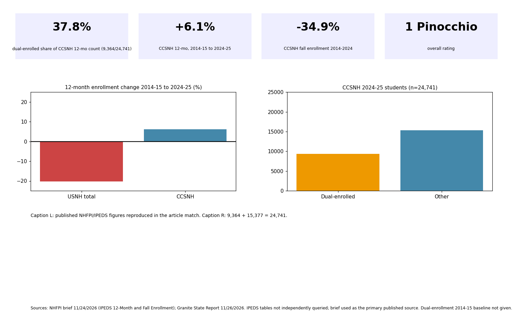

All 20-plus numbers in the piece match the NHFPI brief (Nov 24, 2026), which cites IPEDS. Rating: 1 Pinocchio, mostly accurate with a framing issue.
| Claim | Check | Verdict |
|---|---|---|
| 12-mo public enrollment 56,395 to 51,100 (-9.4%) | Matches NHFPI brief (IPEDS 12-Month) | Supported |
| USNH 33,070 to 26,359 (-20.3%); CCSNH 23,325 to 24,741 (+6.1%) | Matches brief; arithmetic checks (-20.29%, +6.07%) | Supported |
| 9,364 dual-enrolled in 2024-25, 7,585 in 2022-23, 37.8% of CCSNH | Matches brief; 9,364/24,741 = 37.85%. CCSNH's own program report counts 10,952 (different definition) | Supported |
| 15,377 other students | GSR subtraction, correct | Supported |
| Fall 2024 CCSNH enrollment 34.9% below 2014 | Matches brief (IPEDS Fall) | Supported |
| 86% USNH vs 29.6% CCSNH full-time, fall 2024 | Matches brief | Supported |
| HS grads -4.8%, enrolling -15.6%, rate 60.9% to 53.9% | Matches brief (NCHEMS/WICHE/IPEDS) | Supported |
| ~60% of four-year enrollees leave state | Brief says over three in five; fine | Supported |
| USNH tuition $14,435, -17.6% real from 2019-20; room and board +43.9% 2011-23 | Matches brief | Supported |
| NH last in state support per resident and per $1,000 income | Brief cites SHEF Feb 2026; NHFPI earlier release agrees; SHEF table not pulled | Supported (secondary) |
| ~$18 million two-year cut to USNH (NHPR) | NHPR 2025 coverage reports ~$18M cut | Supported |
| NH Promise fall 2027, $100,000; Ayotte plan same line, FY2028-29 budget | Matches UNH/NHPR/Boston Globe; brief endnote says 'below' vs 'up to' $100,000, minor | Supported |
Confidence: high on match to brief; medium on underlying IPEDS since not re-pulled.